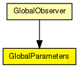

This documentation is released under the Creative Commons license
This documentation is released under the Creative Commons licenseModule for storing global simulation parameters
The following diagram shows usage relationships between types. Unresolved types are missing from the diagram. Click here to see the full picture.
The following diagram shows inheritance relationships for this type. Unresolved types are missing from the diagram. Click here to see the full picture.
If a module type shows up more than once, that means it has been defined in more than one NED file.
| GlobalObserver (compound module) |
global module that contains the globalNodeList and the globalStatistics module |
| Name | Type | Default value | Description |
|---|---|---|---|
| rpcUdpTimeout | double |
default timeout value for direct RPCs |
|
| rpcKeyTimeout | double |
default timeout value for routed RPCs |
|
| printStateToStdOut | bool |
print overlay ready messages to std::cout |
|
| topologyAdaptation | bool |
turn on topologyAdaptation (for demonstrator) |
| Name | Value | Description |
|---|---|---|
| display | i=block/control |
// // Module for storing global simulation parameters // simple GlobalParameters { parameters: double rpcUdpTimeout @unit(s); // default timeout value for direct RPCs double rpcKeyTimeout @unit(s); // default timeout value for routed RPCs bool printStateToStdOut; // print overlay ready messages to std::cout bool topologyAdaptation; // turn on topologyAdaptation (for demonstrator) @display("i=block/control"); }
This documentation is released under the Creative Commons license